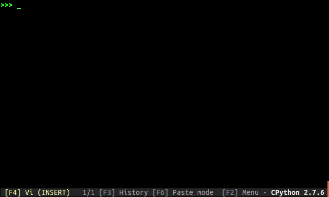

Sometime you need to make a script or a program with some task and show to the user you are doing something so you need to write something as output: a Progress Bar.
You have multiple way to do it and now I will show some way to do it with packages.
Progress
The first package I present is progress, an easy python package with a lot of configuration.
This package is base of one object, the Bar, and you set it, you use it for update the progressbass or end it.
For example
You have this base code:
|
|
This code print the first 100 number one for row. If I want to use a progress’s progress bar I need to to something like this:
|
|
This is a base version of the code for a bar but you can add a lot of configs like suffix, max value, remaing and other things.1
Progressbar2
This is a package wich use iterators for working. You can also create custo widgets (or bars) for creating your custom expirences.
Example
Using the example code
|
|
you can have a progress bar using an iterator. If you need to edit the navbar you can make a custom widgets like the next example
|
|
This is a custom output for the progress bar following the docs find in the project documentation2
TQDM
THe fastest one for install and a very easy one.

Not huge for the customizing part but a good one. It also skip unnecessary iteration displays.
Example
Allwayse with our lovely code:
|
|
Here3 for the docs.
Alive progress
This is the fancy package for progress bar.

If you need a fancy progress bar this is the best one.
Example
With our favorite example this is an example
|
|
With the correct config4 you can have some of the best animation ever.

Wich progress bar is your favorite?
by Fundor333